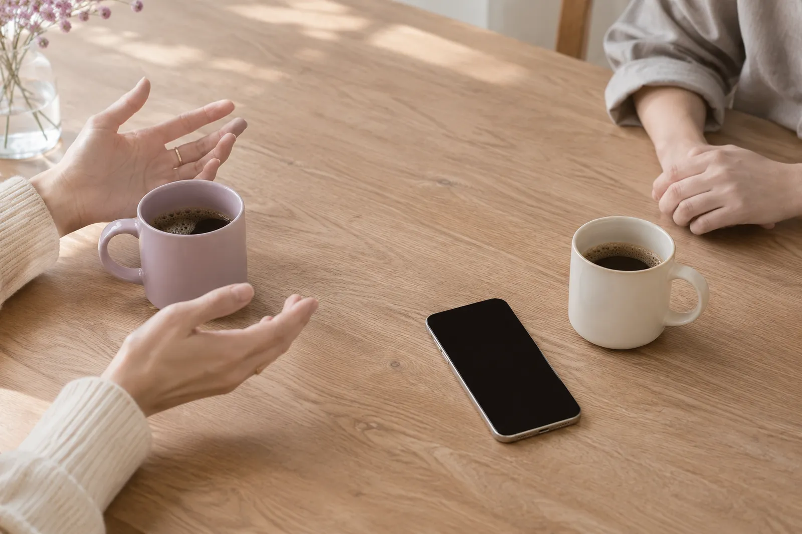
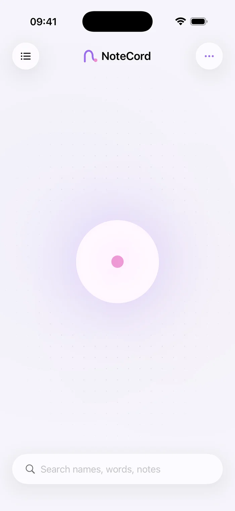
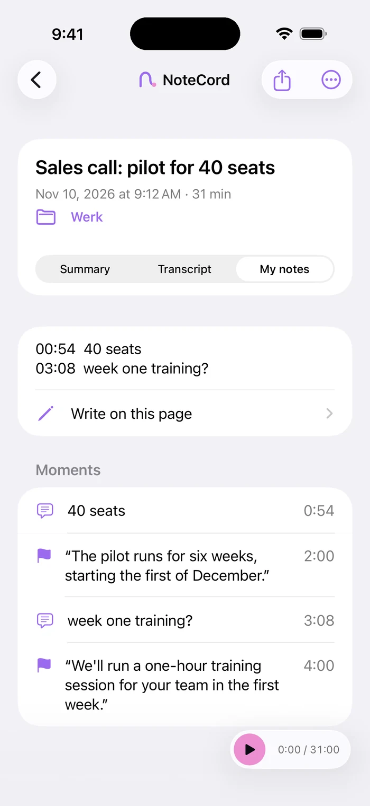
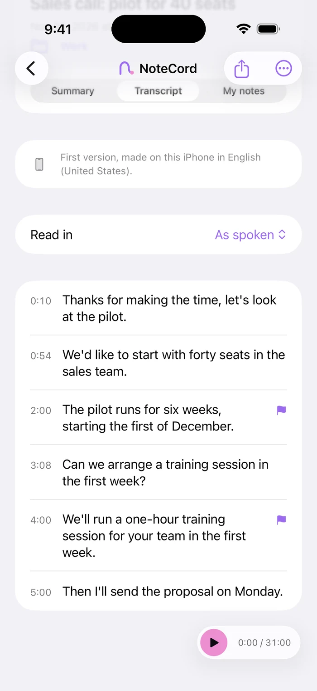
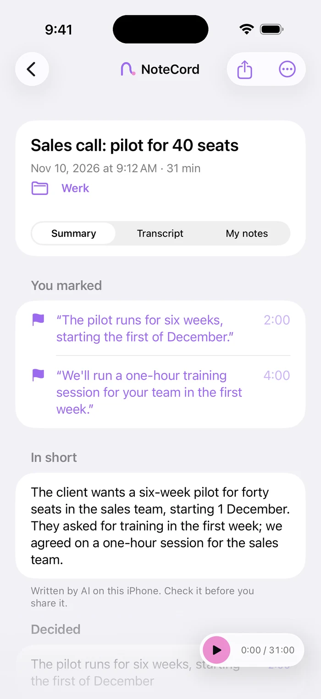

Record the conversation. Keep the words.
To record and transcribe a conversation on your iPhone, use the NoteCord app to capture audio and turn speech into text on your device. NoteCord can also produce a summary with action items, which requires Apple Intelligence. You can listen during the conversation and read it back afterward.

How to do it
- Step 1
Start recording
Open NoteCord on your iPhone and start recording the conversation. You do not need an account.

- Step 2
Lock your screen
Recording continues while your screen is locked. You can see the recording on the Lock Screen and in Dynamic Island.

- Step 3
Mark an important moment
Mark a moment you want to find again, including from the Lock Screen or Dynamic Island. In the app, you can add a typed note or a photo to a moment.

- Step 4
Read the conversation
NoteCord transcribes the conversation on your device. Read the text and search for words from the conversation. Search also finds typed notes attached to moments.

- Step 5
Review the summary
Use the summary to review what the conversation covered. Check agreements and action items before acting on them. Summaries require NoteCord Pro and Apple Intelligence.

Make room for clear speech
Place your iPhone close to the speakers and keep the microphone clear. Choose a quiet spot where possible and take turns speaking. Tell everyone before you start recording and get permission where required.
Know where your recording stays
NoteCord keeps audio on your device. Audio is excluded from all backups. Text also stays on your device, but is included in your own iCloud if your iPhone’s regular iCloud Backup is enabled. NoteCord has no server of its own.
Check the details you use
Compare names, numbers and agreements in the text with the recording before using them. Search the text to find the information you need. Keep conversations together in a folder for each project or client.
Questions people ask
- Can I record and transcribe a conversation on my iPhone?
- Yes. NoteCord records the conversation and transcribes it on your device, on iPhone and iPad.
- Does recording continue when I lock my iPhone?
- Yes. NoteCord keeps recording with the screen locked. The recording is visible on the Lock Screen and in Dynamic Island.
- Do I need Apple Intelligence for a summary?
- A summary with action items in NoteCord requires Apple Intelligence.
- Does NoteCord send my recordings to a server?
- NoteCord never sends your recordings to us. They only reach someone else if you share them. There is no NoteCord server.